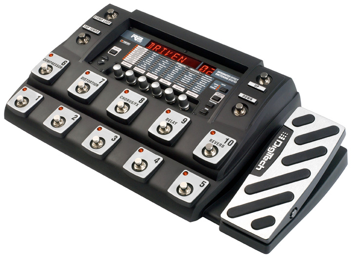

DIGITECH RP360 GUITAR PROCESSOR
The DigiTech RP360XP guitar multi-effect processor is packed with a truckload of iconic amps, cabs, and stompboxes, and it's ready for your next gig or studio date. The intuitive LCD interface makes it easy to explore and nail the perfect tone. Along with its stunning arsenal of effects, the RP360XP gives you a built-in expression pedal, a 40-second looper, 198 presets, a USB port, configurable footswitch modes, a built-in tuner, a headphone jack, and 60 built in drum tracks.
DIGITECH RP360 Specifications:
o 24-bit 44.1kHz sample rate delivers high-quality audio
o 126 effects (32 amps, 18 cabinets, 74 stompboxes)
o 198 presets (99 factory, 99 user)
o 40-second looper lets you get loopy
o Built-in expression pedal for real time control of any effect in your preset
o 60 high-quality drum patterns to spart your creativity
o Durable metal chassis and footswitches will hold up to the rigors of the road
o 2 x 2 USB audio streaming
o Built-in chromatic tuner
o External control input for expression pedal or 3-button footswitch
o Configurable footswitch modes (Stompbox, Preset, Bank)
o Up to 5 seconds of delay time
o USB editing via DigiTech Nexus
o Stereo 1/4" output; stereo 1/8" headphone output
o Amp / Mixer mode optimizes 1/4" outputs for amps and mixers
o Stereo 1/8" Aux Input
o Power supply included